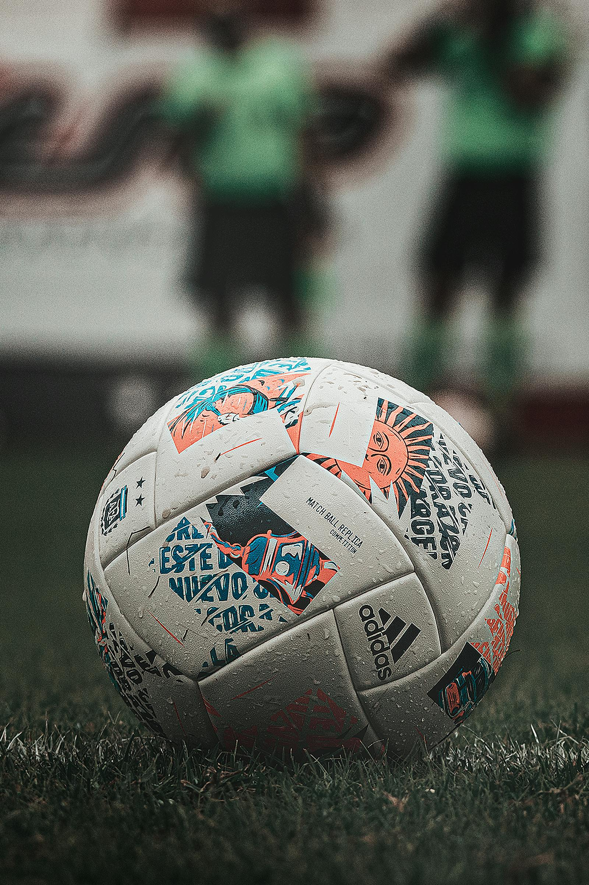

What we offer
Choose full academy support or focused coaching.
Some players need long-term development. Others need team coaching, position-specific work, or match preparation. We shape the program around the real football need.
Our programs
From beginner fundamentals to advanced preparation, we help players and teams grow through structured coaching and competitive training.
What we offer
Some players need long-term development. Others need team coaching, position-specific work, or match preparation. We shape the program around the real football need.
Best for

Skill sessions

Match preparation
01
Age-appropriate coaching that builds technical ability, confidence, movement, and football understanding.
Ideal for: young players building strong football foundations.
02
Structured group sessions that improve team shape, pressing, transitions, and match communication.
Ideal for: school teams, clubs, and organized football groups.
03
Football-focused conditioning that supports endurance, agility, balance, and sharper match intensity.
Ideal for: players improving physical readiness and recovery habits.
04
Targeted support for players preparing for selection events, tournaments, and competitive opportunities.
Ideal for: ambitious athletes stepping into higher-level competition.
Our coaching flow
Need a custom plan?
If you need academy training plus conditioning, or team coaching plus match preparation, we can shape a program that fits your season and level.
Ask About a Program